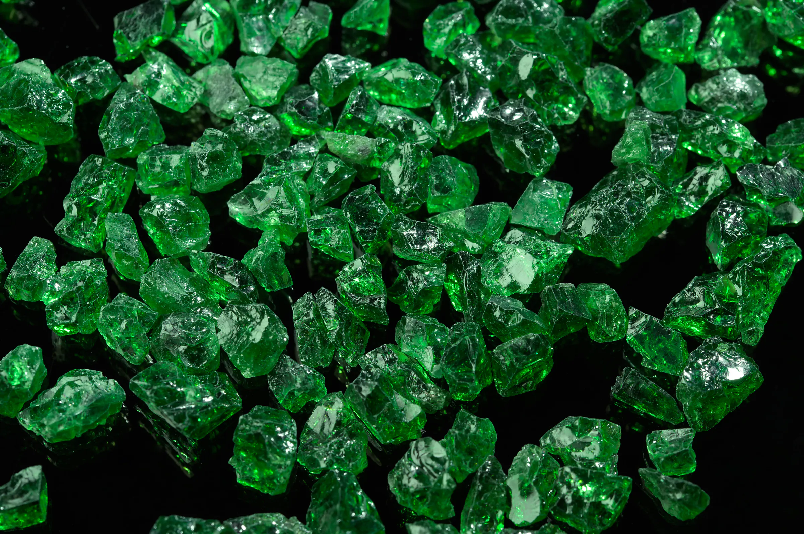
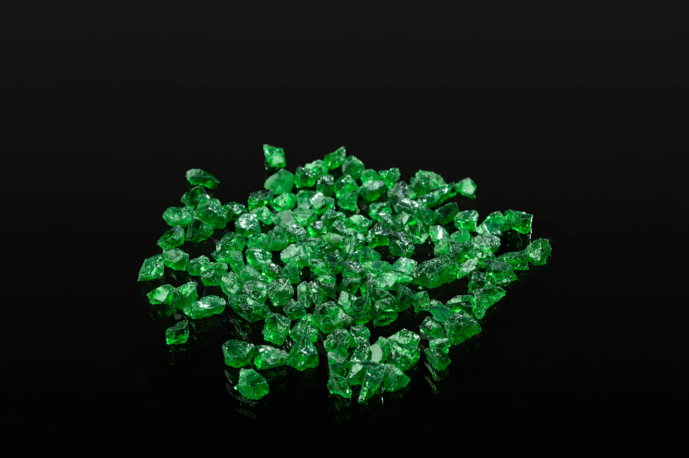
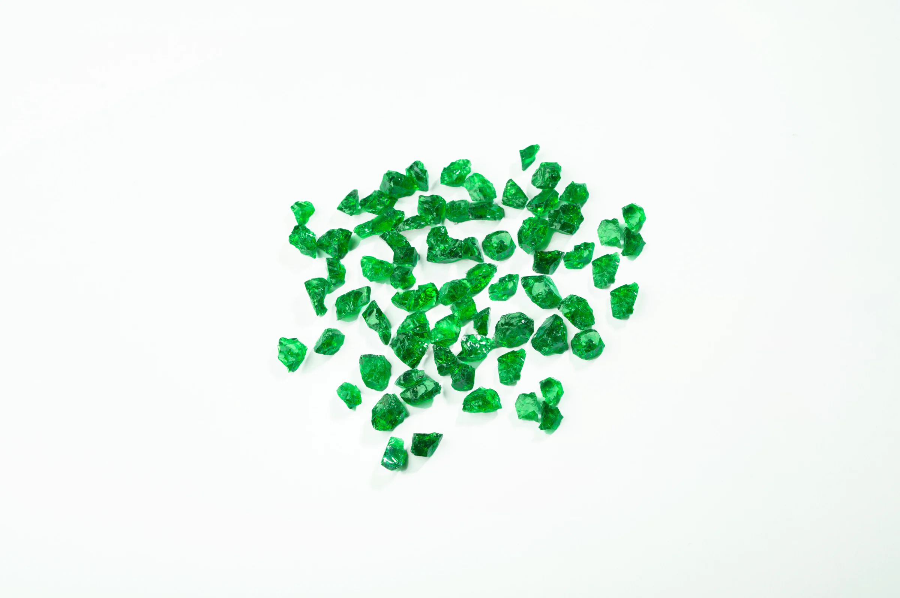
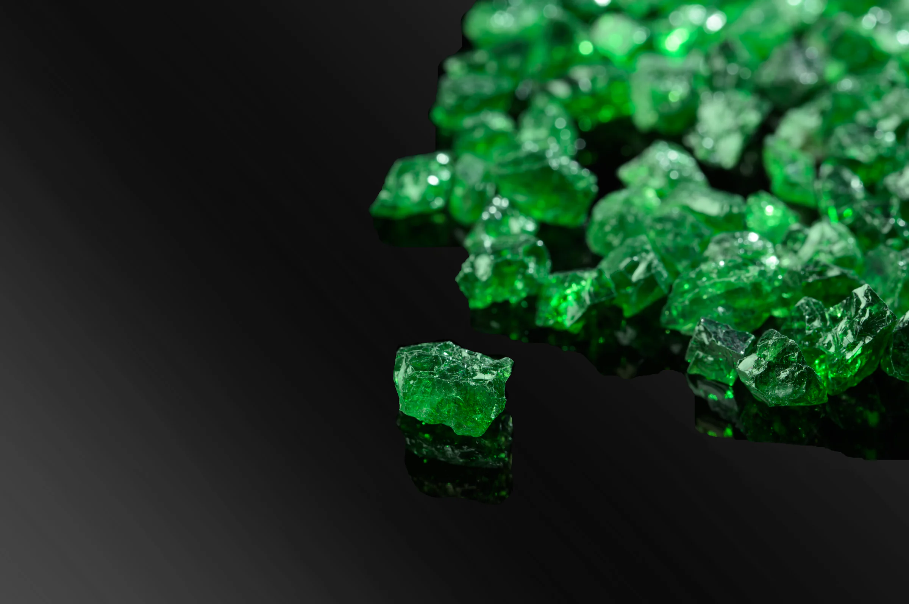
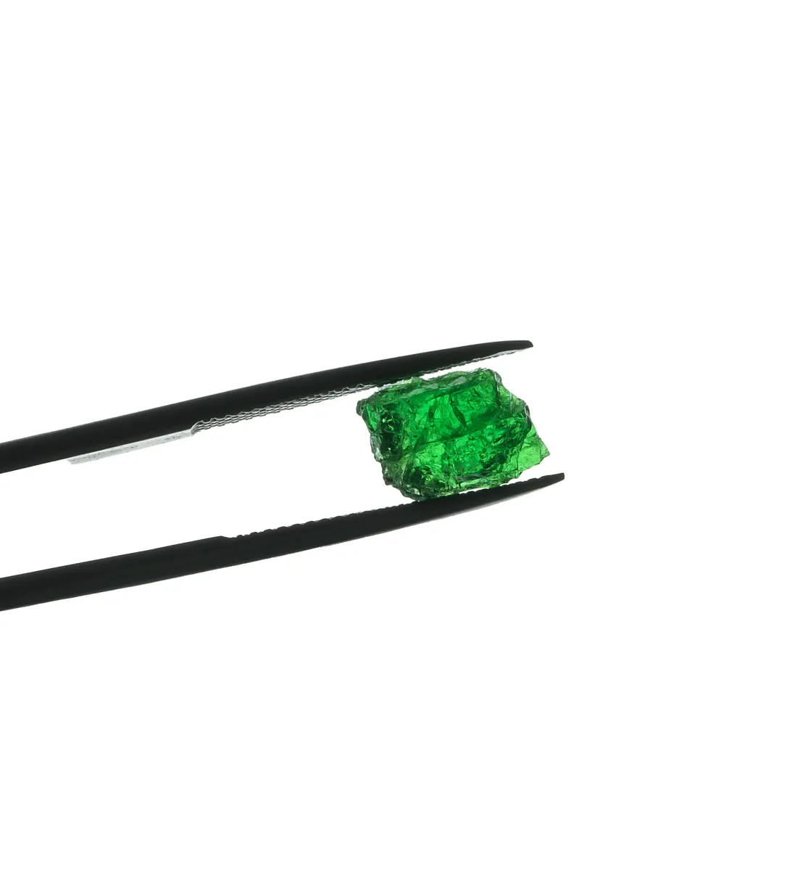
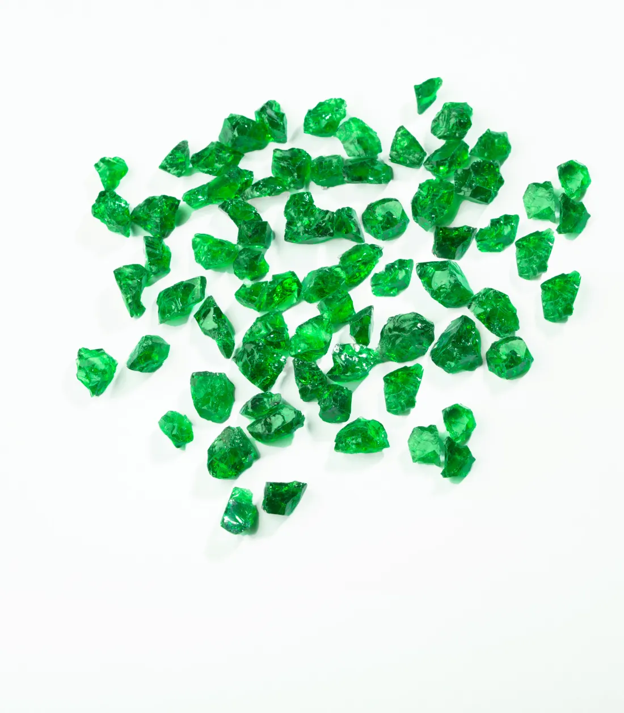
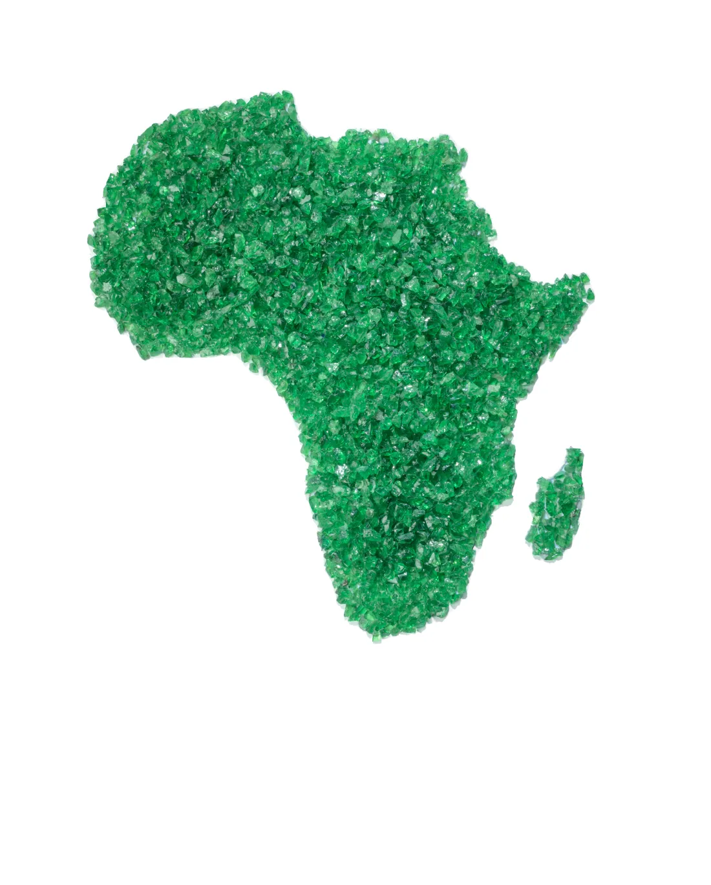
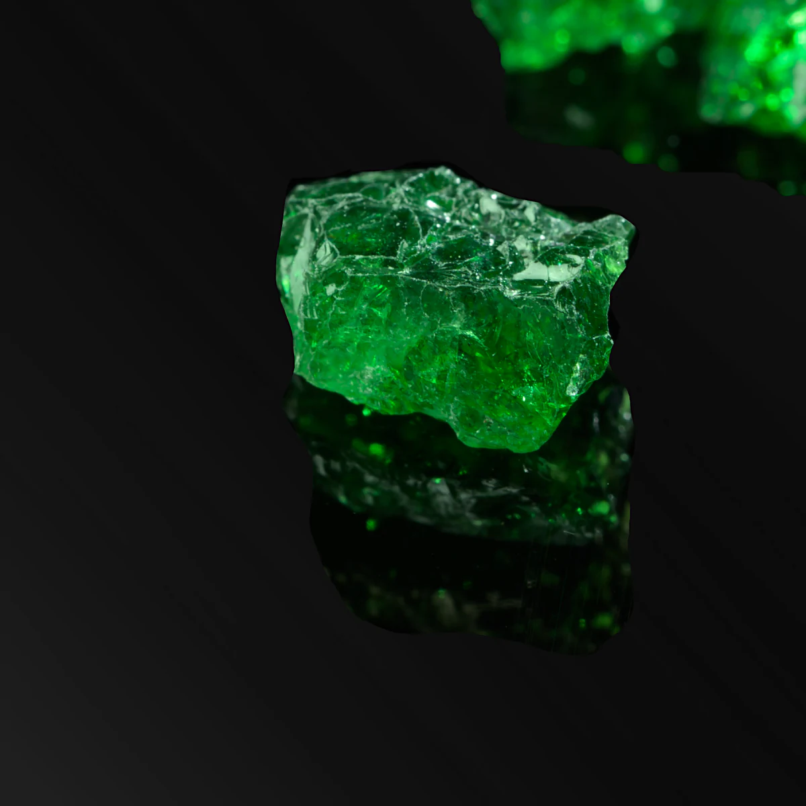

Tanzania, 1967
Discovered by the legendary British geologist Campbell Bridges, after lying hidden in the wilds of East Africa for billions of years.

The Tsavorite stone, born from the fiery depths of Earth's core and discovered by a legendary British geologist Campbell Bridges in Tanzania in 1967, is a dazzling piece of nature's artistry.
This sparkling beauty, adorned with a vibrant green hue, evokes a sense of wonder and enchantment, capturing the imaginations of precious stone connoisseurs and jewellery lovers alike.

Discovered by the legendary British geologist Campbell Bridges, after lying hidden in the wilds of East Africa for billions of years.
The stone, a 325-carat wonder, was found in Kenya in 1971, heralding the discovery of a primary source that had long eluded experts.
Despite the excitement, only a few high-quality crystals were unearthed each year, making each one a testament to the majesty and wonder of nature.


Four times rarer than emeralds.
With a high refractive index, Tsavorite has unmatched brilliance, making it the perfect centerpiece for any jewelry piece.
Pure green heirloom-quality Tsavorites, with a vibrant hue that seems to dance in the light.
High-quality Tsavorite stones over 1-2 carats are a true marvel of nature, with stones over 2 carats being incredibly scarce.
With a hardness rating of 7.5 on the Mohs scale, Tsavorite is incredibly durable.

4×
Rarer than emeralds
Four times rarer than emeralds, pure green heirloom-quality Tsavorites are highly coveted. When these precious gems are found, their unparalleled luster and sparkle are nothing short of breathtaking.


The mere mention of the precious stone's discovery caused a sensation, igniting a frenzy among the world's most discerning jewelers and collectors.
It is also one of the birthstones for January, alongside garnet.
In the world of high fashion and luxury, the tsavorite, with its dazzling green brilliance, was a stone coveted by the rich and famous.
Believed to have metaphysical properties, Tsavorite is said to promote prosperity, abundance, and healing, making it more than just a beautiful gemstone but also a source of positive energy.
